← 返回阅读库 · 原论文目录
论文讲解阅读文档 · 论文精读 · v223
打脸主流！大道至简！何恺明新作：JiT
视频时长 00:11:16；讲解文字 3,800 字符；提取讲解画面 161 张。按视频原顺序阅读，每段文字保留时间戳。
文字来自整段视频的自动语音转写，按自然停顿分段，并与 PPT / 论文页面 / 演示画面对齐。未将讲解压缩为摘要；术语、数字和口述公式请结合画面及原论文核对。 阅读稿已校正规范部分明确术语误识别；原始逐字稿和每处修改记录另行保留。
讲解画面为源视频截图（640×360），不是可编辑 PPT 文件。全片按每秒 2 帧扫描内容变化，逐步展开页保留；连续动画保留代表画面。清晰度受源视频限制。
下载完整资料包 · 含离线 HTML、PDF、Word、全部 PPT 画面和字幕。
原论文与材料
Back to Basics: Let Denoising Generative Models Denoise · 下载完整 PDF（18 页）
按时间阅读
00:00:00–00:00:01 · 画面 001
 00:00:00–00:00:01 · 画面 001
00:00:00–00:00:01 · 画面 001他是让整个 AI 领域都为之瞩目的男人，何恺明。他提出的 Resnet 是 21 世纪单篇被引用次数最多的论文。他引领的 MAE 重塑了视觉自监督学习。而今天他的团队带着一篇新论文回来了。这一次目标直指 AI 圈的顶流扩散模型。论文的标题霸气外露，Back to Basics。
00:00:01–00:00:05 · 画面 002
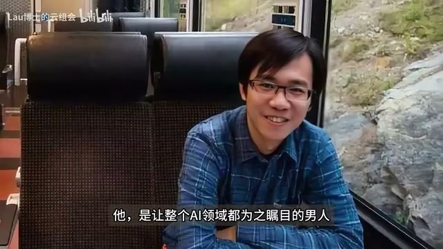
00:00:01–00:00:05 · 画面 00200:00:05–00:00:09 · 画面 003
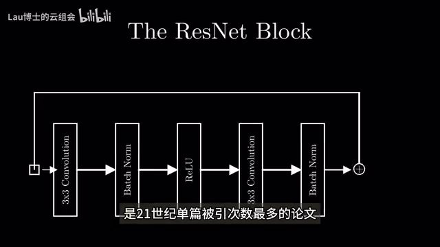
00:00:05–00:00:09 · 画面 00300:00:09–00:00:13 · 画面 004
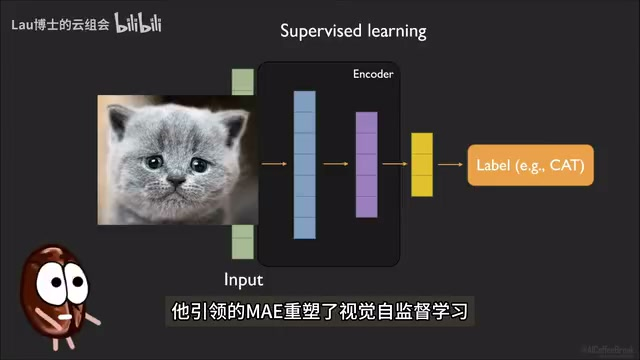
00:00:09–00:00:13 · 画面 00400:00:13–00:00:17 · 画面 005
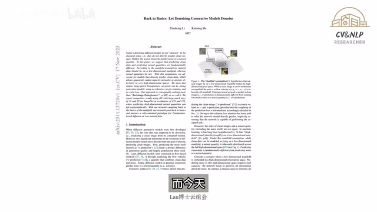
00:00:13–00:00:17 · 画面 00500:00:17–00:00:21 · 画面 006
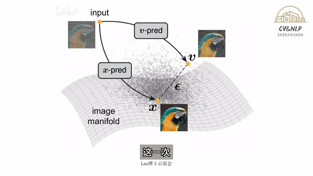
00:00:17–00:00:21 · 画面 00600:00:21–00:00:23 · 画面 007
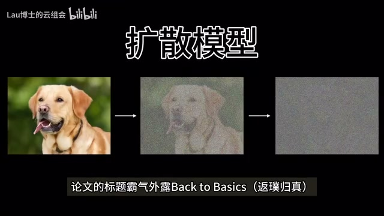
00:00:21–00:00:23 · 画面 00700:00:23–00:00:27 · 画面 008
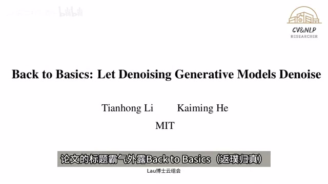
00:00:23–00:00:27 · 画面 008文中直接拷问，我们花了这么多算力让模型去预测噪声，这条路是不是从一开始就走错了？如果答案是真的错了，那我们过去几年看到的众多 AI 图像视频的爆炸式进展，其底层逻辑可能都要被重新审视。本期视频我们就来深入解读，何恺明团队如何用一个最简单的 Transformer 直接预测目标图像，挑战扩散模型的根本方式。
00:00:27–00:00:31 · 画面 009
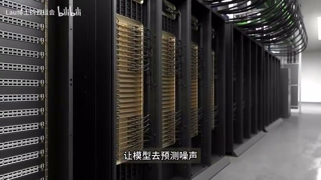
00:00:27–00:00:31 · 画面 00900:00:31–00:00:34 · 画面 010
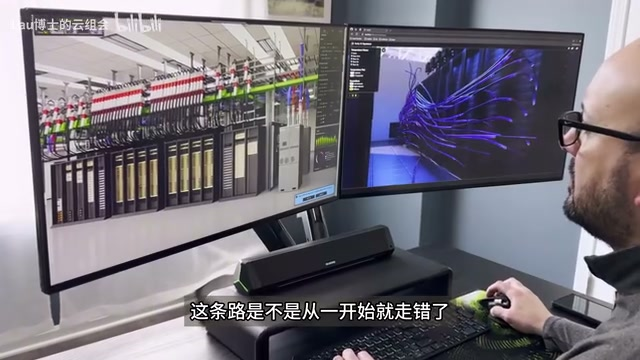
00:00:31–00:00:34 · 画面 01000:00:34–00:00:35 · 画面 011
00:00:34–00:00:35 · 画面 01100:00:35–00:00:39 · 画面 012
00:00:35–00:00:39 · 画面 01200:00:39–00:00:41 · 画面 013
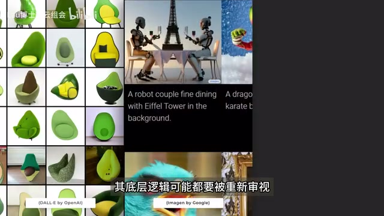
00:00:39–00:00:41 · 画面 01300:00:41–00:00:44 · 画面 014
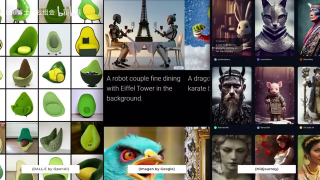
00:00:41–00:00:44 · 画面 01400:00:44–00:00:47 · 画面 015
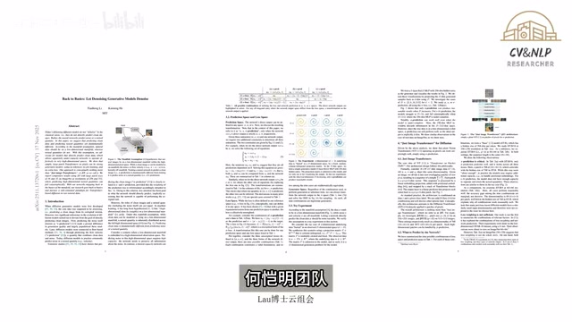
00:00:44–00:00:47 · 画面 01500:00:47–00:00:51 · 画面 016
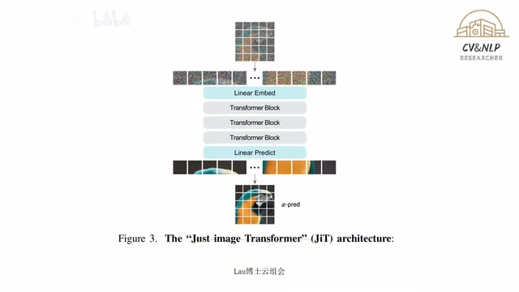
00:00:47–00:00:51 · 画面 01600:00:51–00:00:55 · 画面 017
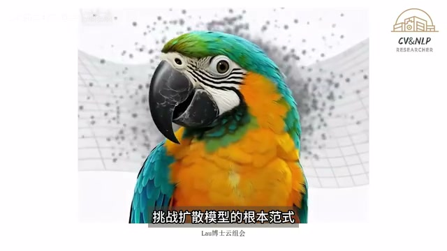
00:00:51–00:00:55 · 画面 017云组会论文精读系列：扩散模型反普归正 JIT
00:00:55–00:00:59 · 画面 018
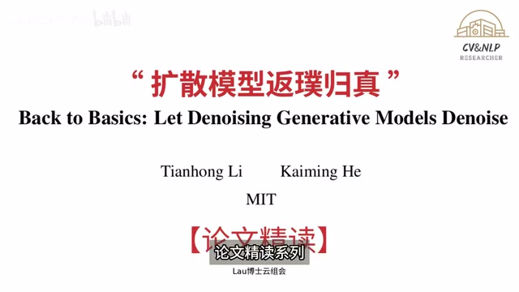
00:00:55–00:00:59 · 画面 01800:00:59–00:01:03 · 画面 019
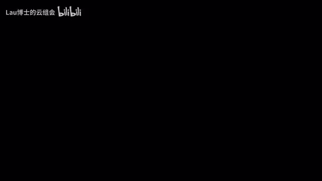
00:00:59–00:01:03 · 画面 01900:01:03–00:01:05 · 画面 020
00:01:03–00:01:05 · 画面 02000:01:05–00:01:08 · 画面 021
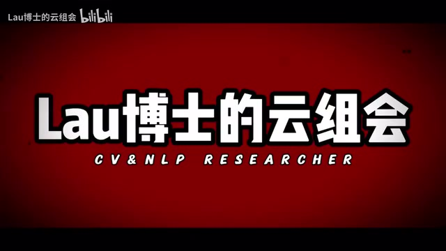
00:01:05–00:01:08 · 画面 02100:01:08–00:01:12 · 画面 022
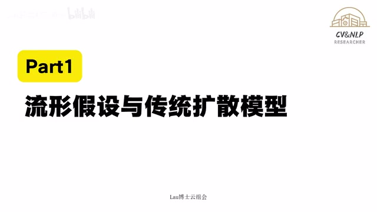
00:01:08–00:01:12 · 画面 022屏幕前的各位专家可能会好奇，为什么通过最简单的 Transformer 直接预测干净数据就能解决扩散模型高维生成的难题？那这里就不得不提到机器学习领域的经典理论，也是这篇论文的关键之称流形假设。流形假设的核心是，高维空间里的图像数据不会零散的分布在整个高维的区域，而是集中依附在一个低维的流形上。
00:01:12–00:01:16 · 画面 023
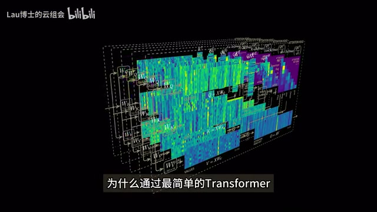
00:01:12–00:01:16 · 画面 02300:01:16–00:01:18 · 画面 024
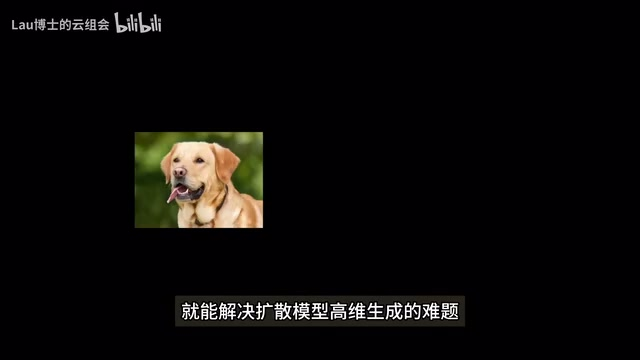
00:01:16–00:01:18 · 画面 02400:01:18–00:01:22 · 画面 025
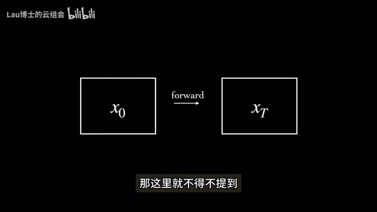
00:01:18–00:01:22 · 画面 02500:01:22–00:01:26 · 画面 026
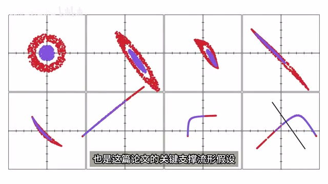
00:01:22–00:01:26 · 画面 02600:01:26–00:01:30 · 画面 027
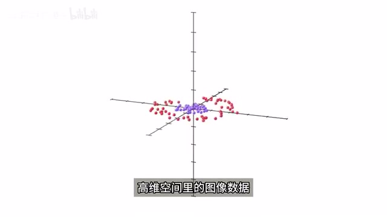
00:01:26–00:01:30 · 画面 02700:01:30–00:01:34 · 画面 028
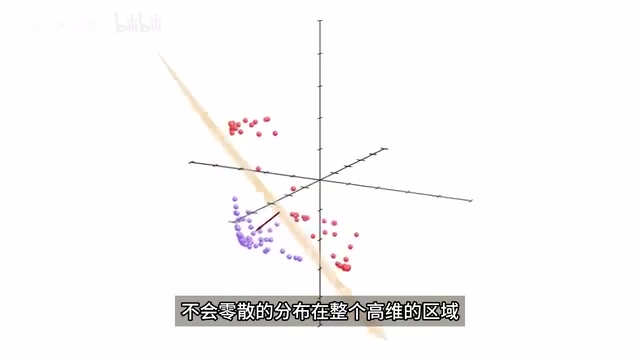
00:01:30–00:01:34 · 画面 02800:01:34–00:01:37 · 画面 029
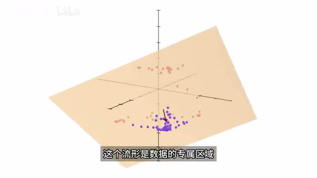
00:01:34–00:01:37 · 画面 029这个流形是数据的专属区域只包含图像数据的核心信息比如物体的形状、颜色剔除了高维的冗余和噪声
00:01:37–00:01:39 · 画面 030
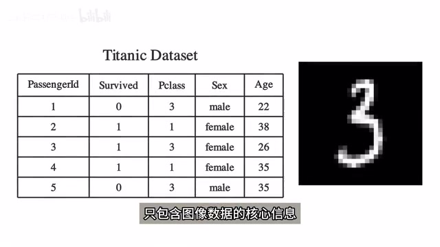
00:01:37–00:01:39 · 画面 03000:01:39–00:01:41 · 画面 031
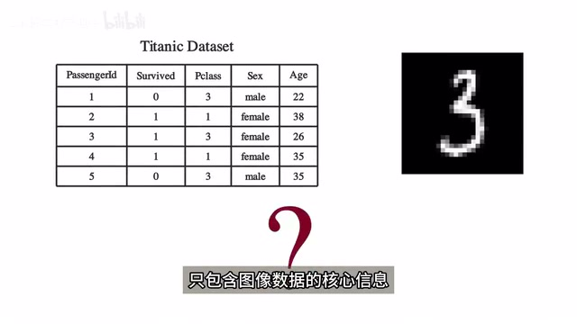
00:01:39–00:01:41 · 画面 03100:01:41–00:01:45 · 画面 032
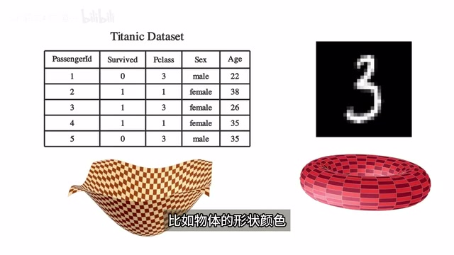
00:01:41–00:01:45 · 画面 032简单来说，就是图像数据看着是高维的，其本质是低维的，像高维空间卷起来的一张低维纸，所有的真实数据都落在了这张纸上。而噪声含照亮这些无意义的信息才会闪在纸外的高维空间里。这个差异正好戳中了传统扩散模型的痛点。先看看传统扩散模型的工作逻辑，它们主要有两种预测方向，一种是 Epsilon Prediction。
00:01:45–00:01:48 · 画面 033
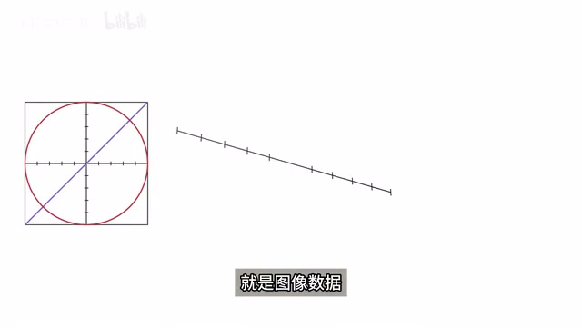
00:01:45–00:01:48 · 画面 03300:01:48–00:01:52 · 画面 034
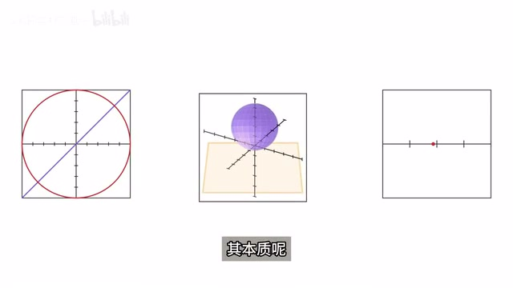
00:01:48–00:01:52 · 画面 03400:01:52–00:01:53 · 画面 035
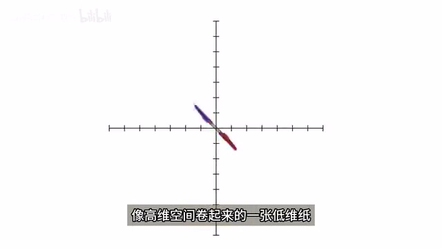
00:01:52–00:01:53 · 画面 03500:01:53–00:02:05 · 画面 036
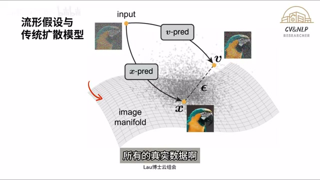
00:01:53–00:02:05 · 画面 03600:02:05–00:02:08 · 画面 037
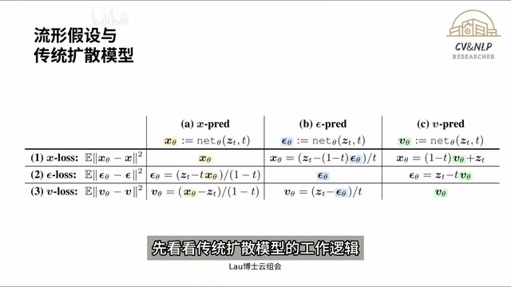
00:02:05–00:02:08 · 画面 03700:02:08–00:02:11 · 画面 038
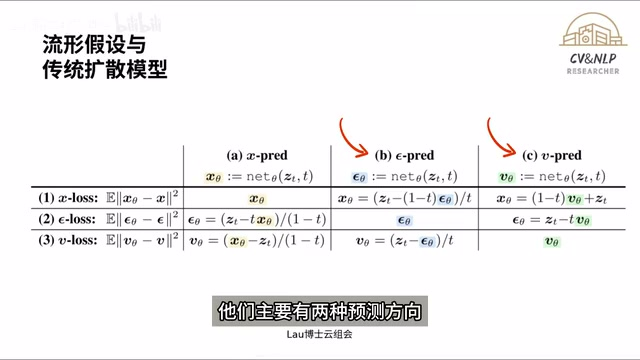
00:02:08–00:02:11 · 画面 03800:02:11–00:02:16 · 画面 039
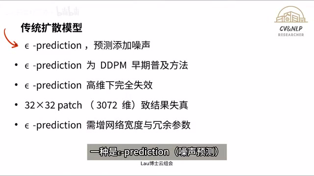
00:02:11–00:02:16 · 画面 039直接预测添加到干净数据上的噪声，这是早期 DDPM 普及的主要方法，核心是预测添加的噪声。
00:02:16–00:02:18 · 画面 040
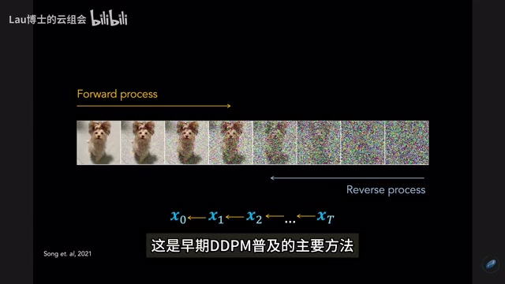
00:02:16–00:02:18 · 画面 04000:02:18–00:02:21 · 画面 041
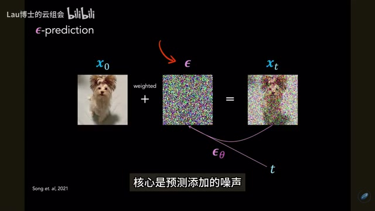
00:02:18–00:02:21 · 画面 041训练时模型学习从带噪声的数据 Zt 中还原噪声 Epsilon，再通过 Zt 减去噪声得到干净数据。但它的短板很明显，高维空间下完全失效，比如处理 32x32 像素的 Patch 时，模型需要记住每个维度的噪声特征，普通的 Transformer 的隐藏层无法承载，导致了生成结果完全失真。
00:02:21–00:02:32 · 画面 042
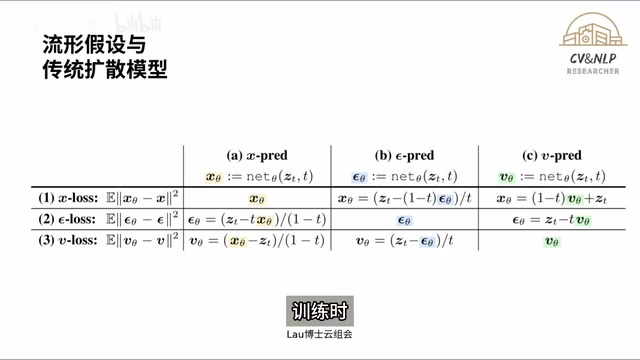
00:02:21–00:02:32 · 画面 04200:02:32–00:02:40 · 画面 043
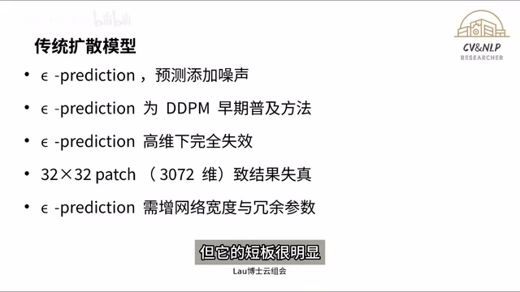
00:02:32–00:02:40 · 画面 04300:02:40–00:02:45 · 画面 044
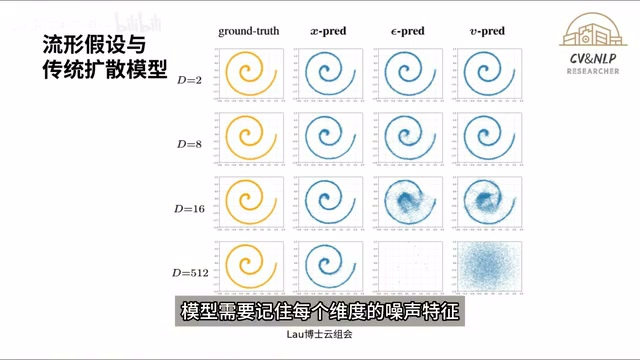
00:02:40–00:02:45 · 画面 04400:02:45–00:02:51 · 画面 045
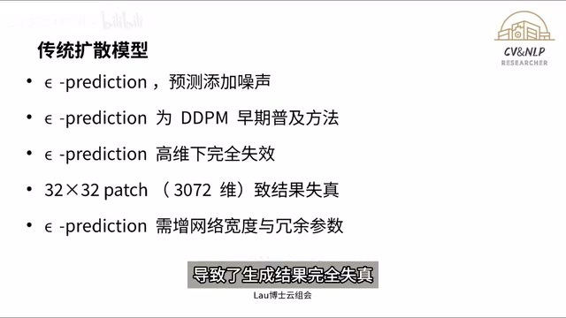
00:02:45–00:02:51 · 画面 045而且为了适配高维，必须增加网络宽度和参数，造成严重的永驴。另一种是 V-Prediction，预测的数据与噪声的混合量后来被用于连接扩散模型与流行方法，核心是预测数据与噪声的流速 VV，同时包含了干净数据 X 和噪声ε的信息，看似更全面，但带噪量 V 的分布横跨整个高维空间，模型需要学习的范式更加的复杂。
00:02:51–00:02:52 · 画面 046
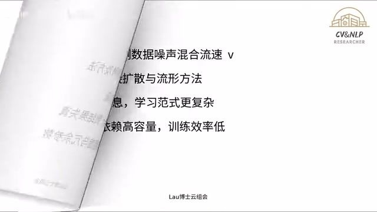
00:02:51–00:02:52 · 画面 04600:02:52–00:03:07 · 画面 047
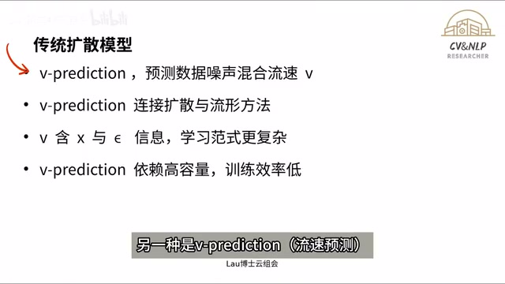
00:02:52–00:03:07 · 画面 04700:03:07–00:03:09 · 画面 048
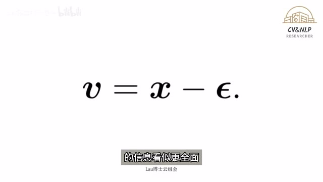
00:03:07–00:03:09 · 画面 04800:03:09–00:03:16 · 画面 049
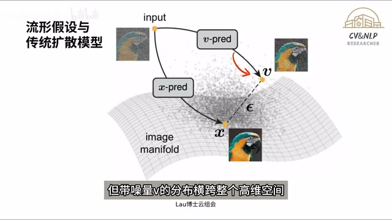
00:03:09–00:03:16 · 画面 049同样摆脱不了对高容量的依赖，且训练效率更低。综上，各位专家应该也发现了，无论是ε的 prediction 还是 Vprediction 都有个通病，他们需要模型在高维空间中学习预测全维度分布的带噪量，比如生成 512x512 的图像时，每个像素的 patch 的维度高达 3072，传统的模型必须有足够大的容量才能捕捉这些高维信息，否则就会出现灾难性失败。
00:03:16–00:03:19 · 画面 050
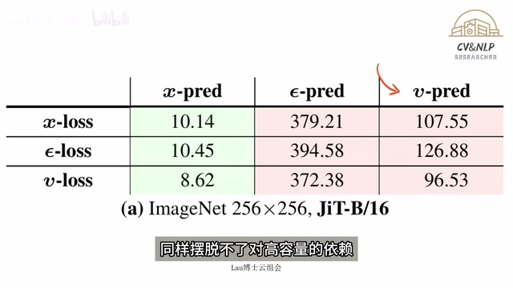
00:03:16–00:03:19 · 画面 05000:03:19–00:03:22 · 画面 051
00:03:19–00:03:22 · 画面 05100:03:22–00:03:25 · 画面 052
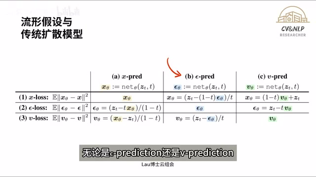
00:03:22–00:03:25 · 画面 05200:03:25–00:03:26 · 画面 053
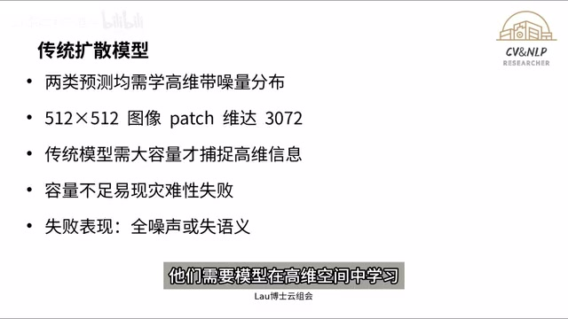
00:03:25–00:03:26 · 画面 05300:03:26–00:03:30 · 画面 054
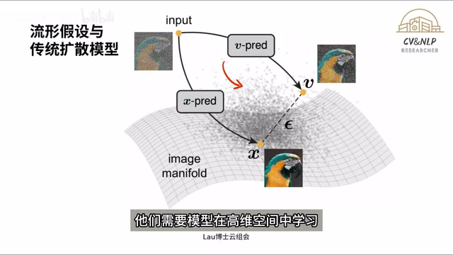
00:03:26–00:03:30 · 画面 05400:03:30–00:03:40 · 画面 055
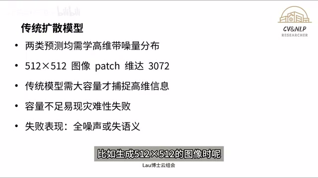
00:03:30–00:03:40 · 画面 05500:03:40–00:03:41 · 画面 056
00:03:40–00:03:41 · 画面 05600:03:41–00:03:45 · 画面 057
00:03:41–00:03:45 · 画面 057要么生成的图像全是噪声，要么完全丢失语义。而刚刚提到的流形假设告诉我们，干净的数据自身只需要低维的信息就能表征。何恺明团队提出的 JIT 正是抓住了这一点，回归扩散模型的初衷，直接预测干净数据。
00:03:45–00:03:47 · 画面 058
00:03:45–00:03:47 · 画面 05800:03:47–00:03:49 · 画面 059
00:03:47–00:03:49 · 画面 05900:03:49–00:03:55 · 画面 060
00:03:49–00:03:55 · 画面 06000:03:55–00:03:59 · 画面 061
00:03:55–00:03:59 · 画面 06100:03:59–00:04:03 · 画面 062
00:03:59–00:04:03 · 画面 062不需要模型记住高维噪声的所有细节，只需要从带噪输入中筛选出欠在低维流形上的干净数据特征，既降低了模型的容量需求，又避免了高维空间维度的灾难。这和从杂乱信号中精准提取核心信息的逻辑不谋而合。
00:04:03–00:04:07 · 画面 063
00:04:03–00:04:07 · 画面 06300:04:07–00:04:08 · 画面 064
00:04:07–00:04:08 · 画面 06400:04:08–00:04:10 · 画面 065
00:04:08–00:04:10 · 画面 06500:04:10–00:04:18 · 画面 066
00:04:10–00:04:18 · 画面 06600:04:18–00:04:19 · 画面 067
00:04:18–00:04:19 · 画面 067通过下表能直观的看到三者的核心差异，更易理解 JIT 的突破点。x-prediction 直接对准流形上的真实 X，学习误差仅来自流行学习偏差，最终的预测结果离真实的 X 更近。可见传统的方法始终难以平衡高维适配与效率损耗，要么因为预测的目标是高维分布而失败，要么为了适配高维而堆砌参数导致效率极低。
00:04:19–00:04:24 · 画面 068
00:04:19–00:04:24 · 画面 06800:04:24–00:04:28 · 画面 069
00:04:24–00:04:28 · 画面 06900:04:28–00:04:29 · 画面 070
00:04:28–00:04:29 · 画面 07000:04:29–00:04:33 · 画面 071
00:04:29–00:04:33 · 画面 07100:04:33–00:04:42 · 画面 072
00:04:33–00:04:42 · 画面 07200:04:42–00:04:46 · 画面 073
00:04:42–00:04:46 · 画面 07300:04:46–00:04:47 · 画面 074
00:04:46–00:04:47 · 画面 074JIT 的关键创新就是回归直接预测干净数据的本质，结合流形假设让模型只关注低维核心特征，再搭配大 Patch Transformer 的极简架构，彻底摆脱了对高容量和额外依赖的需求。这也是它能同时解决高维适配与效率问题的核心原因。另外，力友博士最近也会加更几期何恺明团队的前沿工作，感兴趣的同学欢迎关注。接下来我们就具体看看 JIT 的实现细节。
00:04:47–00:04:52 · 画面 075
00:04:47–00:04:52 · 画面 07500:04:52–00:04:56 · 画面 076
00:04:52–00:04:56 · 画面 07600:04:56–00:05:06 · 画面 077
00:04:56–00:05:06 · 画面 07700:05:06–00:05:10 · 画面 078
00:05:06–00:05:10 · 画面 07800:05:10–00:05:12 · 画面 079
00:05:10–00:05:12 · 画面 07900:05:12–00:05:15 · 画面 080
00:05:12–00:05:15 · 画面 080JIT 以流形假设为理论基础，通过直接预测干净数据加极简大 Patch Transformer 的协同设计，实现高维像素空间的高效生成。方法详解如下：第一是核心预测目标，直接预测干净数据，这是 JIT 的灵魂，也是它能适配高维的根本原因。预测逻辑极其简洁，输入带噪数据 ZT，模型直接输出干净数据的预测值 XSETA。
00:05:15–00:05:27 · 画面 081
00:05:15–00:05:27 · 画面 08100:05:27–00:05:41 · 画面 082
00:05:27–00:05:41 · 画面 08200:05:41–00:05:42 · 画面 083
00:05:41–00:05:42 · 画面 083无需先预测噪声或流速，再通过公式反推。基于流形假设，干净数据 X 嵌在低维流形上，模型不需要学习高维空间的复杂模式，只需要从 EZT 中筛选出流形上的核心特征，即使是隐藏层的维度低于 patch 的维度也能精准预测。训练时采用 VLoss 优化，但通过 X Theta 转换得到 V Theta。
00:05:42–00:05:48 · 画面 084
00:05:42–00:05:48 · 画面 08400:05:48–00:05:54 · 画面 085
00:05:48–00:05:54 · 画面 08500:05:54–00:06:07 · 画面 086
00:05:54–00:06:07 · 画面 086既保证了优化的稳定性。
00:06:07–00:06:14 · 画面 087
00:06:07–00:06:14 · 画面 087又不改变直接预测 X 的核心逻辑。避免了传统方法的复杂损失加权。第二个是极简架构设计。
00:06:14–00:06:27 · 画面 088
00:06:14–00:06:27 · 画面 088大 Patch 原生 Transformer JIT 的架构可以用纯粹来形容。完全基于原生 VIT没有任何多余的组件。对输入将 HxWx3 的图像划分为
00:06:27–00:06:31 · 画面 089
00:06:27–00:06:31 · 画面 089非重叠的大 Patch 256x256 的图像用 16x16 的 Patch
00:06:31–00:06:33 · 画面 090
00:06:31–00:06:33 · 画面 090512x512 的图像用 32x32 的 Patch
00:06:33–00:06:37 · 画面 091
00:06:33–00:06:37 · 画面 091大 Patch 的设计大幅降低序列的长度
00:06:37–00:06:41 · 画面 092
00:06:37–00:06:41 · 画面 092提升计算效率核心的组件部分仅包含线性嵌入
00:06:41–00:06:42 · 画面 093
00:06:41–00:06:42 · 画面 09300:06:42–00:06:51 · 画面 094
00:06:42–00:06:51 · 画面 094位置编码 Transformer 块和线性预测头没有任何额外的模块无潜空间的 Tokenize无预训练的权重无对抗损失或者是感知损失
00:06:51–00:06:55 · 画面 095
00:06:51–00:06:55 · 画面 095完全在像素空间端到端训练
00:06:55–00:06:59 · 画面 096
00:06:55–00:06:59 · 画面 096这里的关键优势是大 Patch 既能保留局部语义的完整性
00:06:59–00:07:02 · 画面 097
00:06:59–00:07:02 · 画面 097又能减少 Transformer 的计算量
00:07:02–00:07:04 · 画面 098
00:07:02–00:07:04 · 画面 098让模型在
00:07:04–00:07:05 · 画面 099
00:07:04–00:07:05 · 画面 0991024x1024分辨率下的计算量与 256x256 相当
00:07:05–00:07:09 · 画面 100
00:07:05–00:07:09 · 画面 100第三个是可选优化
00:07:09–00:07:21 · 画面 101
00:07:09–00:07:21 · 画面 101瓶颈嵌入这是 JIT 的意外发现进一步验证了流形假设的正确性在设计逻辑上在 Patch 的嵌入层加入降维加升维的线性瓶颈将高维的 Patch 先降到低维的 D-Pen
00:07:21–00:07:25 · 画面 102
00:07:21–00:07:25 · 画面 102再升到 Transformer 的隐藏层的维度
00:07:25–00:07:33 · 画面 103
00:07:25–00:07:33 · 画面 103动态调节部分偏执向相关逻辑在 JIT 中体现为噪声调度的优化通过 logit-normal 的分布采样梯子动态的调整噪声水平平衡训练稳定性与生成质量这里有着很大的价值瓶颈强制模型学习低维特征恰好契合流形假设实验显示当瓶颈的维度在 32 到
00:07:33–00:07:37 · 画面 104
00:07:33–00:07:37 · 画面 10400:07:37–00:07:49 · 画面 105
00:07:37–00:07:49 · 画面 10500:07:49–00:07:53 · 画面 106
00:07:49–00:07:53 · 画面 106512 支坚实 FID 能提升 1.3 即使瓶颈的维度降至 16 也不会出现性能退化最后我们来看一下训练与推理流程 JIT 的训练与推理流程极度简洁核心差异集中在数据处理和预测目标上对比如下训练阶段的核心是学习从带噪数据中提取干净的数据特征
00:07:53–00:07:59 · 画面 107
00:07:53–00:07:59 · 画面 10700:07:59–00:08:05 · 画面 108
00:07:59–00:08:05 · 画面 10800:08:05–00:08:06 · 画面 109
00:08:05–00:08:06 · 画面 10900:08:06–00:08:11 · 画面 110
00:08:06–00:08:11 · 画面 11000:08:11–00:08:12 · 画面 111
00:08:11–00:08:12 · 画面 11100:08:12–00:08:17 · 画面 112
00:08:12–00:08:17 · 画面 112模型通过 V-Loss 优化逐步掌握流形上的低维特征模式且不需要任何额外的监督线性嵌入层与位置编码的参数全程冻结的逻辑在 JIT 中体现为架构组件的固定仅优化 Transformer 的核心权重避免勇于计算推理阶段的核心是高效迭代生成从纯噪声的 Z0 开始通过 50 步 ODE 求解逐步向干净数据收敛
00:08:17–00:08:18 · 画面 113
00:08:17–00:08:18 · 画面 11300:08:18–00:08:20 · 画面 114
00:08:18–00:08:20 · 画面 11400:08:20–00:08:22 · 画面 115
00:08:20–00:08:22 · 画面 11500:08:22–00:08:27 · 画面 116
00:08:22–00:08:27 · 画面 11600:08:27–00:08:28 · 画面 117
00:08:27–00:08:28 · 画面 11700:08:28–00:08:33 · 画面 118
00:08:28–00:08:33 · 画面 11800:08:33–00:08:34 · 画面 119
00:08:33–00:08:34 · 画面 11900:08:34–00:08:36 · 画面 120
00:08:34–00:08:36 · 画面 12000:08:36–00:08:38 · 画面 121
00:08:36–00:08:38 · 画面 12100:08:38–00:08:43 · 画面 122
00:08:38–00:08:43 · 画面 122由于模型预测的是低维流形特征迭代过程稳定且快速无需复杂的采样策略 OK 讲完方法我们接着看看实验
00:08:43–00:08:44 · 画面 123
00:08:43–00:08:44 · 画面 12300:08:44–00:08:49 · 画面 124
00:08:44–00:08:49 · 画面 12400:08:49–00:08:50 · 画面 125
00:08:49–00:08:50 · 画面 12500:08:50–00:08:51 · 画面 126
00:08:50–00:08:51 · 画面 126实验部分我们主要看高维生成性能和效率优势充分验证 JIT 的核心价值首先在单分辨率生成中 JIT 以极低的计算量实现了顶尖的性能在 ImageNet 512x512 的分辨率下 JIT G32 的 FID 仅为 1.78 超过传统像素扩散模型且参数仅 2B
00:08:51–00:09:03 · 画面 127
00:08:51–00:09:03 · 画面 12700:09:03–00:09:07 · 画面 128
00:09:03–00:09:07 · 画面 12800:09:07–00:09:08 · 画面 129
00:09:07–00:09:08 · 画面 12900:09:08–00:09:13 · 画面 130
00:09:08–00:09:13 · 画面 13000:09:13–00:09:14 · 画面 131
00:09:13–00:09:14 · 画面 131计算量 384 GFLOPS 远低于 ADM-G 其次在跨分辨率的生成中 JIT 展现出了极强的泛化能力用 512x512 训练的 JIT G32 下采样到 256x256 后的 FID 等于 1.84 与直接训练的 JIT G16 几乎持平
00:09:14–00:09:17 · 画面 132
00:09:14–00:09:17 · 画面 13200:09:17–00:09:18 · 画面 133
00:09:17–00:09:18 · 画面 13300:09:18–00:09:30 · 画面 134
00:09:18–00:09:30 · 画面 13400:09:30–00:09:31 · 画面 135
00:09:30–00:09:31 · 画面 13500:09:31–00:09:33 · 画面 136
00:09:31–00:09:33 · 画面 13600:09:33–00:09:34 · 画面 137
00:09:33–00:09:34 · 画面 13700:09:34–00:09:39 · 画面 138
00:09:34–00:09:39 · 画面 138用 256x256 训练的 JIT G16 上传到 512x512 后 FID 等于 2.45 稍有下降但仍优于多数专门训练的模型体现了大 Bench 设计的羽翼鲁邦径最后在高维大 Patch 的测试中 JIT 彻底打破了传统模型的瓶颈当 Patch 的维度达到 122880
00:09:39–00:09:40 · 画面 139
00:09:39–00:09:40 · 画面 13900:09:40–00:09:44 · 画面 140
00:09:40–00:09:44 · 画面 14000:09:44–00:09:46 · 画面 141
00:09:44–00:09:46 · 画面 14100:09:46–00:09:47 · 画面 142
00:09:46–00:09:47 · 画面 14200:09:47–00:09:50 · 画面 143
00:09:47–00:09:50 · 画面 14300:09:50–00:09:59 · 画面 144
00:09:50–00:09:59 · 画面 144Epsilon Prediction 和 V-Prediction 完全失效而 JIT B64 仍然保持 FID 等于 4.82 证明直接预测干净数据思路从根本上解决了高维维度的灾难这些实验充分证明 JIT 不仅在高维空间中实现了低耗高效的生成更通过极简的架构摆脱了传统方法对预训练潜空间的依赖为扩散模型提供了全新的原生数据生成的方式
00:09:59–00:10:00 · 画面 145
00:09:59–00:10:00 · 画面 14500:10:00–00:10:03 · 画面 146
00:10:00–00:10:03 · 画面 14600:10:03–00:10:07 · 画面 147
00:10:03–00:10:07 · 画面 14700:10:07–00:10:11 · 画面 148
00:10:07–00:10:11 · 画面 14800:10:11–00:10:28 · 画面 149
00:10:11–00:10:28 · 画面 14900:10:28–00:10:29 · 画面 150
00:10:28–00:10:29 · 画面 15000:10:29–00:10:31 · 画面 151
00:10:29–00:10:31 · 画面 151与 Fly Lola 类似这篇论文通过对比经典的 Epsilon Prediction 和 V-Prediction 的方式清晰的揭示了传统扩散模型的核心痛点让读者能迅速的 get 到直接预测干净数据的价值
00:10:31–00:10:36 · 画面 152
00:10:31–00:10:36 · 画面 15200:10:36–00:10:37 · 画面 153
00:10:36–00:10:37 · 画面 15300:10:37–00:10:42 · 画面 154
00:10:37–00:10:42 · 画面 15400:10:42–00:10:44 · 画面 155
00:10:42–00:10:44 · 画面 155我觉得一篇好的文章就应该这样回归本质不盲目的追求复杂的架构和技巧而是从基础的假设出发解决领域内长期存在的核心矛盾 JIT 的成功不仅是在于提出了一种新的方法更是确立了 Diffusion 加 Transformer 的方式
00:10:44–00:10:56 · 画面 156
00:10:44–00:10:56 · 画面 15600:10:56–00:10:57 · 画面 157
00:10:56–00:10:57 · 画面 15700:10:57–00:11:02 · 画面 158
00:10:57–00:11:02 · 画面 158无需额外的依赖原生数据就能高效生成这种少其实多的思路不仅在计算机视觉的领域极具价值更能推广到了蛋白质分子等难以设计的 tokenized 科学领域展现了基础研究广泛的影响力
00:11:02–00:11:03 · 画面 159
00:11:02–00:11:03 · 画面 15900:11:03–00:11:07 · 画面 160
00:11:03–00:11:07 · 画面 16000:11:07–00:11:16 · 画面 161
00:11:07–00:11:16 · 画面 161转写与来源说明 · 1 个自动复核提示
保留 64 个原始语音片段，1 个片段触发自动复核提示。提示仅用于定位可能的术语、重复或识别问题，不等于已确认错误。
讲解画面为源视频截图（640×360），不是可编辑 PPT 文件。全片按每秒 2 帧扫描内容变化，逐步展开页保留；连续动画保留代表画面。清晰度受源视频限制。
原视频：paper/合集_2026-10-16_论文精读/bilidown检测到重名文件-ha5k-打脸主流！大道至简！何恺明新作：JiT【论文精读】.mp4
SHA-256：2b31904fd4fb8975b21b41631d6e2036d83f94fb167a44db5486b8bcadd70a01
云组会
全文按视频语音与画面制作。原论文可从上方链接下载；完整资料包保留全文、原始逐字稿、字幕和校对记录。